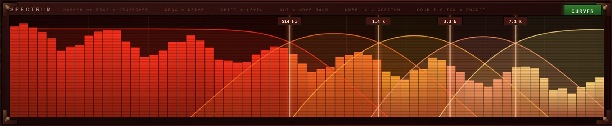

One to five bands, each running its own algorithm out of sixteen — from a tube
that flatters everything to a fold-crush-clip cascade with no musical justification at all.
Every band is level-matched, so turning DRIVE up changes what it sounds like without changing
how loud it is. And the front panel comes off: under it is a patch bay where any band can
drive any other.
Distortion normally sells itself by getting louder. Turn the knob, it gets
fatter, and the ear says yes before the brain has had a chance.
Here every band measures its own loudness immediately before its shaper and immediately
after it, and applies whatever correction makes those two match. It is measured rather than
modelled, so it works for all sixteen algorithms without a lookup table — including the ones
that change the crest factor completely.
Swept across the full drive range with pink noise, the output level moves by 0.44 dB at
the very worst, and under 0.15 dB for most of them. That is well inside the range where
the ear is judging the sound rather than the volume — so an A/B is an honest one, and if it
sounds better with the drive up, it is better.
1 to 5 bands
Split where it matters
Fourth-order Linkwitz-Riley with the all-pass compensation that keeps the sum flat —
measured within 0.08 dB at every band count. Drag the markers on the live spectrum.
16 algorithms
Per band, independently
Nothing is shared but the crossovers. A tube on the bottom, a wavefolder in the middle
and a bitcrusher on top is a perfectly ordinary afternoon.
A limiter each
And a brick wall after
Every band has its own ceiling. Pull it down and the band becomes a compressor the
distortion feeds, which on a drum bus is frequently the whole point.
1× 2× 4×
Oversampled
63-tap polyphase half-band, transparent to within 0.02 dB in the audio band. Or run it
at 1× when you actually want the aliasing.

Each band's zone is tinted in its own colour and the spectrum bars are coloured
by the band they fall into — so you can see which band is doing the work before you hear
it.
The sixteen
Roughly in order of how much damage they do. The first four flatter; the last
four do not pretend to. Each has a CHARACTER control that is a different thing on every
algorithm — and is labelled with whatever it currently is.
Mild
Harsh
Digital
Unreasonable
WARM — cubic soft clip
FUZZ — hard clip, different threshold each way up
RECTIFY — half/full wave, octave up
RING MOD — 12 Hz to 4 kHz inside the band
VALVE — a triode, genuinely lopsided
RAZOR — tanh sliding to razor-hard
BITCRUSH — fifteen bits down to one
CHEBYSHEV — injects one partial at a time
OVERDRIVE — soft clip with a knee
FOLD — triangle wavefolder
DECIMATE — one sample in seventy-one
SHRED — a clip that tightens, and a gate
TAPE — saturation with a memory
SINE FOLD — metallic, inharmonic
SLEW — asymmetric slew limiter
ANNIHILATE — fold, crush, clip, chaos
BIAS works on all sixteen. It shifts the shaper's operating point, which makes it
lopsided — and a lopsided shaper makes even harmonics. On the mild four it is the difference
between clean and characterful.
Every band is the same nine controls, with a moving-coil meter at the foot: the
left LED strip is the band limiter working, the right one is how much the gain match is
adding or taking away.
Take the front panel off
A multiband processor normally runs its bands in parallel and in silence: five
separate distortions that never learn of each other’s existence, summed at the end. That is
tidy, and it is why multiband distortion so often sounds like five things happening rather
than one. Press PATCH BAY and the panel lifts off.
A column per band, the input and output envelopes on the side rails, the four
crossover frequencies along the floor, and eight cables. Every patch point is a block of
three holes — one plug per hole, and you can count what is connected.
Out of each band comes its audio and its envelope — what it sounds like, and
how loud it is right now. Into each band go its audio in and its four knobs, and along
the floor sit the crossover frequencies themselves. A cable into an AUDIO IN carries signal:
that band’s output is mixed into this one, one sample later, before the shaper. A cable
into a knob carries control: it is added to the knob, and an audio source contributes its
envelope rather than its waveform.
Patch this
And it does this
Band 1 envelope → band 4 drive, about −60 %
The top of the spectrum backs off every time the bass hits. Ducking, but per band and
inside the distortion rather than after it.
Band 3 audio → band 5 audio in, about +40 %
The top band distorts the middle band’s output as well as its own share of the
source. Harmonics of harmonics — this is where it stops sounding like a multiband.
Output envelope → crossover 3, about +50 %
The crossover walks upward as the whole thing gets loud. Nothing is modulating
anything obvious, and yet the machine will not sit still.
It cannot run away. Audio cables make loops, and a loop through five distortions with
the gain up is the definition of a feedback path. Every audio cable is delayed a single
sample, every band ends in its own ceiling limiter, and the auto gain is measuring rather
than modelling — it hears a loop building and takes it back down. Bench: all five bands wired
in a ring at full drive for thirty seconds, peak 1.000, still 1.000 after the input was cut;
two hundred random patchings, nothing unbounded.
Download and install
Two minutes. There is no installer — a VST3 plugin is a folder you copy into
place.
Download the zip.Martian-Gain-VST3-win64.zip (7 MB).
On GitHub you can also press the green Code → Download ZIP button on the
repository
and find it under vst3-apps/martian-gain/.
Unzip it.
Right-click → Extract All. Inside you get a Martian Gain.vst3
folder, a standalone Martian Gain.exe, the manual and a readme.
Copy the plugin folder into the VST3 directory.
Move the whole Martian Gain.vst3folder — not just the file inside
it — into C:\Program Files\Common Files\VST3\. Windows will ask for
administrator permission; that is normal.
Rescan plugins in your DAW.
In Ableton Live: Preferences → Plug-Ins → Rescan. It appears as an effect called
Martian Gain, by Brokild. Put it on a drum bus and press RANDOM.
If the plugin window is blank, install the
Microsoft Edge WebView2 runtime.
The interface is drawn with WebView2, which ships with current Windows but can be missing on
older or heavily stripped installations. The audio keeps working with the window shut either
way.
Requirement
Detail
System
Windows 10 or 11, 64-bit
Build
260827.2 — shown on the loading screen and in the panel header
Format
VST3 effect, stereo in and out, no MIDI. A standalone application is in the same zip.
Parameters
85, every one host-automatable — 61 on the panel, 24 in the patch bay
Sample rates
Any. Tested at 44.1, 48, 88.2 and 96 kHz against every oversampling ratio.